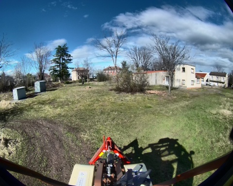
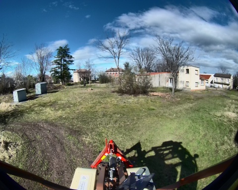

Chemin complet : /data/synchro_data/Innodura/Agrivia/Données/2025_bag/mapping_1_19_03_2025

Files: mapping_1_19_03_2025_0.db3
Bag size: 2.3 GiB
Storage id: sqlite3
Duration: 52.403983166s
Start: Mar 19 2025 15:31:00.622769128 (1742394660.622769128)
End: Mar 19 2025 15:31:53.026752294 (1742394713.026752294)
Messages: 47709
Topic information: Topic: /robot/imu/data | Type: sensor_msgs/msg/Imu | Count: 5228 | Serialization Format: cdr
Topic: /robot/base/controller/odometry | Type: romea_mobile_base_msgs/msg/OneAxleSteeringMeasureStamped | Count: 522 | Serialization Format: cdr
Topic: /robot/base/controller/odom | Type: nav_msgs/msg/Odometry | Count: 520 | Serialization Format: cdr
Topic: /alpo/camera/image_synchro | Type: sensor_msgs/msg/Image | Count: 285 | Serialization Format: cdr
Topic: /robot/localisation/filtered_odom | Type: nav_msgs/msg/Odometry | Count: 512 | Serialization Format: cdr
Topic: /robot/imu/mag | Type: sensor_msgs/msg/MagneticField | Count: 5229 | Serialization Format: cdr
Topic: /robot/gps/ntrip/rtcm | Type: mavros_msgs/msg/RTCM | Count: 484 | Serialization Format: cdr
Topic: /robot/imu/velocity | Type: geometry_msgs/msg/TwistStamped | Count: 5229 | Serialization Format: cdr
Topic: /robot/joystick/joy | Type: sensor_msgs/msg/Joy | Count: 787 | Serialization Format: cdr
Topic: /robot/localisation/status | Type: romea_localisation_msgs/msg/LocalisationStatus | Count: 523 | Serialization Format: cdr
Topic: /robot/gps/nmea_sentence | Type: nmea_msgs/msg/Sentence | Count: 1569 | Serialization Format: cdr
Topic: /robot/localisation/attitude | Type: romea_localisation_msgs/msg/ObservationAttitudeStamped | Count: 5240 | Serialization Format: cdr
Topic: /robot/base/bridge/vehicle_controller/odom | Type: nav_msgs/msg/Odometry | Count: 523 | Serialization Format: cdr
Topic: /robot/robot_description | Type: std_msgs/msg/String | Count: 1 | Serialization Format: cdr
Topic: /robot/localisation/course | Type: romea_localisation_msgs/msg/ObservationCourseStamped | Count: 524 | Serialization Format: cdr
Topic: /robot/gps/fix | Type: sensor_msgs/msg/NavSatFix | Count: 523 | Serialization Format: cdr
Topic: /parameter_events | Type: rcl_interfaces/msg/ParameterEvent | Count: 0 | Serialization Format: cdr
Topic: /rosout | Type: rcl_interfaces/msg/Log | Count: 647 | Serialization Format: cdr
Topic: /diagnostics | Type: diagnostic_msgs/msg/DiagnosticArray | Count: 432 | Serialization Format: cdr
Topic: /alpo/lidar/pointcloud_synchro | Type: sensor_msgs/msg/PointCloud2 | Count: 285 | Serialization Format: cdr
Topic: /robot/localisation/angular_speed | Type: romea_localisation_msgs/msg/ObservationAngularSpeedStamped | Count: 5240 | Serialization Format: cdr
Topic: /robot/gps/vel | Type: geometry_msgs/msg/TwistStamped | Count: 453 | Serialization Format: cdr
Topic: /robot/joint_states | Type: sensor_msgs/msg/JointState | Count: 5230 | Serialization Format: cdr
Topic: /tf | Type: tf2_msgs/msg/TFMessage | Count: 1443 | Serialization Format: cdr
Topic: /robot/localisation/position | Type: romea_localisation_msgs/msg/ObservationPosition2DStamped | Count: 524 | Serialization Format: cdr
Topic: /tf_static | Type: tf2_msgs/msg/TFMessage | Count: 6 | Serialization Format: cdr
Topic: /robot/localisation/twist | Type: romea_localisation_msgs/msg/ObservationTwist2DStamped | Count: 521 | Serialization Format: cdr
Topic: /robot/imu/imu_data_str | Type: std_msgs/msg/String | Count: 5229 | Serialization Format: cdr